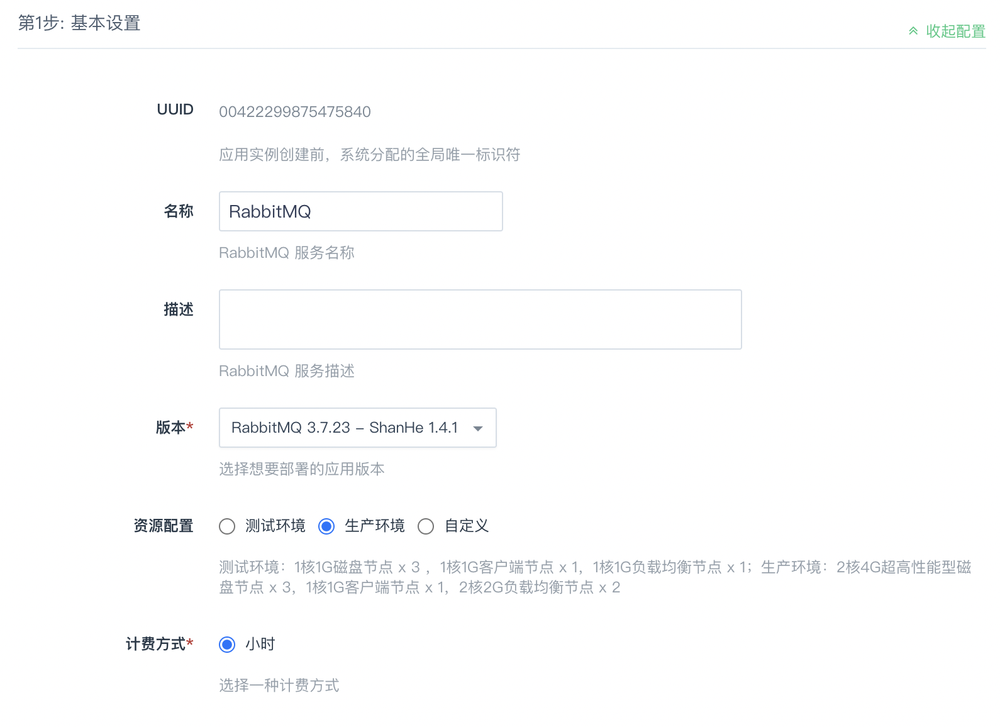
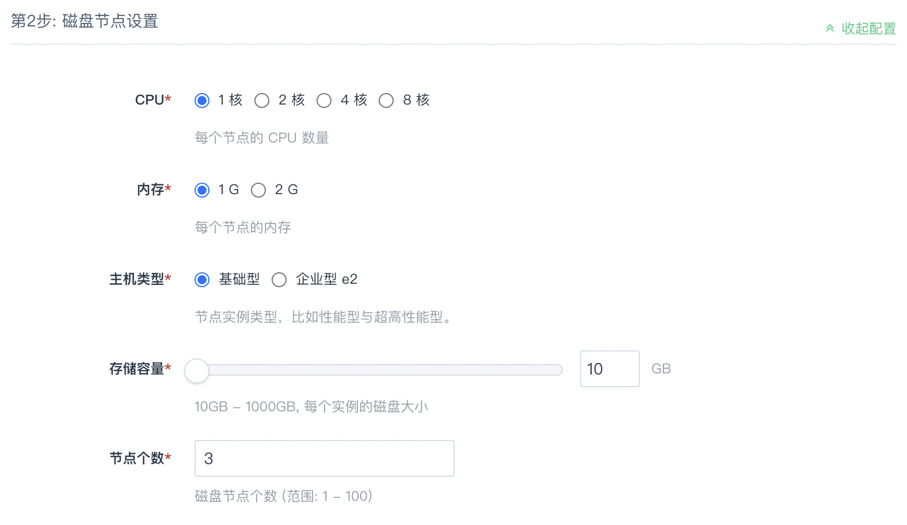
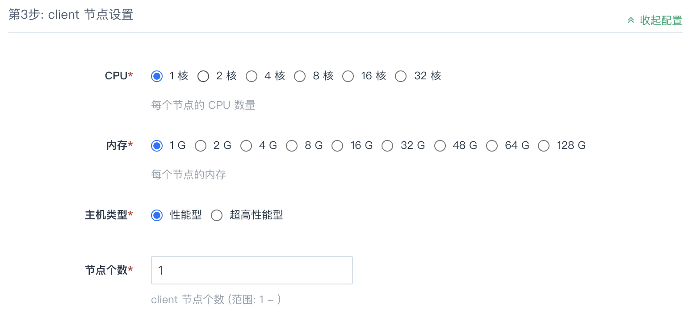
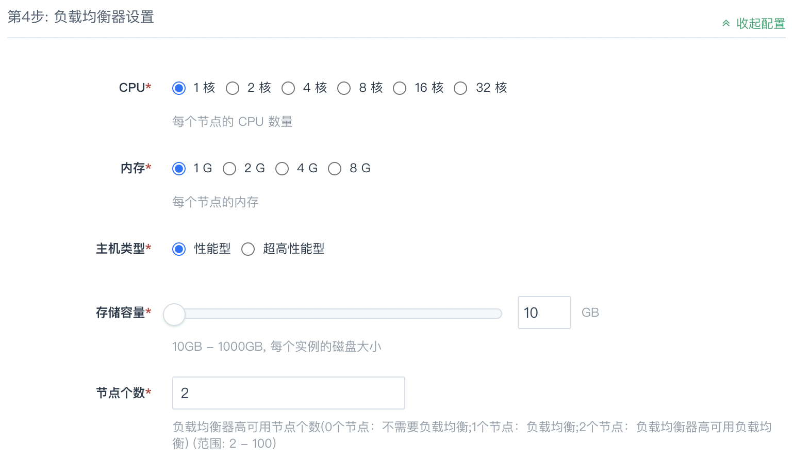
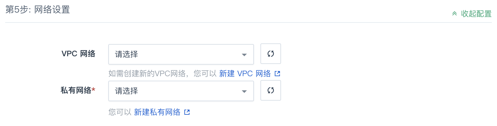
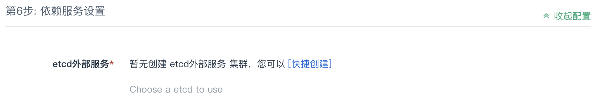
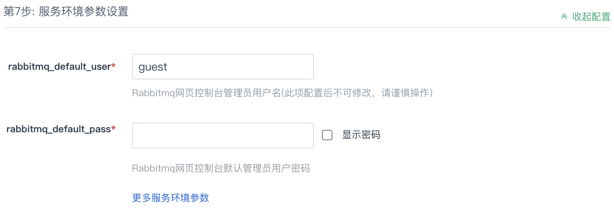
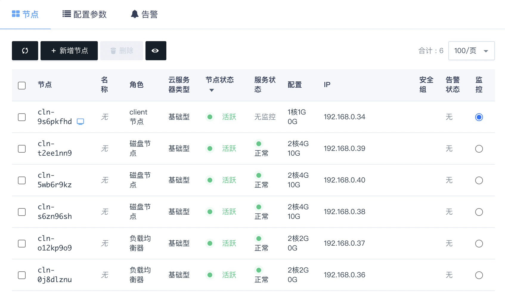

创建 RabbitMQ 集群
本文指导您如何快速创建 RabbitMQ 集群。
准备工作
创建 RabbitMQ 集群前，您可以事先准备好以下资源，以便在创建过程中可以快速进行配置：
-
创建 VPC 网络及私有网络。RabbitMQ 集群节点需要运行在私有网络中，以保证网络安全。
-
创建 etcd 集群。RabbitMQ 集群节点信息将存放在 etcd 中。
说明
多个 RabbitMQ 集群支持使用同一个etcd。
当然，您也可以选择在创建 RabbitMQ 集群过程中，根据界面提示入口再进行创建。
前提条件
已注册计算平台账号并完成实名认证。
操作步骤
-
登录管理控制台。
-
在顶部菜单栏中，选择产品与服务 > 消息队列与中间件 > 消息队列 RabbitMQ。
-
点击立即部署，进入 etcd 服务的部署页面。
-
在顶部区域下拉框中，选择部署区域。
基本设置
设置 RabbitMQ 集群的基本信息，包括名称、描述、版本、资源配置、计费方式。
| 参数 | 说明 |
|---|---|
| 名称 | RabbitMQ 集群的名称。 |
| 描述 | RabbitMQ 集群的描述信息。 |
| 版本 | RabbitMQ 服务的版本。为体验更丰富、完善的功能，建议选择最新版本。 |
| 资源配置 | 资源配置包括磁盘节点、client 节点及负载均衡器的数量、云服务器类型、硬盘类型等配置。 可选择测试环境及生产环境两种类型的配置，在部署页面右侧的费用预览区域可查看每种类型的配置详情。若以上两种类型不满足您的需求，您也可以选择自定义，然后手动配置磁盘节点、client 节点及负载均衡器。 |
| 计费方式 | 目前支持按小时计费。 |
磁盘节点设置（可选）
磁盘节点即 RabbitMQ Broker，是消息中间件的服务节点，用于接收和分发消息。
仅当基本设置中资源类型选择自定义时，才需要配置磁盘节点。
根据实际需求及页面提示，设置磁盘节点的 CPU、内存、主机类型、存储容量及节点个数。
client节点设置（可选）
Client 节点用于部署 RabbitMQ 命令行工具，包括rabbitmq-defaults、rabbitmq-diagnostics、rabbitmq-env、rabbitmq-plugins、rabbitmq-queues、rabbitmq-server、rabbitmq-upgrade 以及 rabbitmqctl。
仅当基本设置中资源类型选择自定义时，才需要配置Client节点。
根据实际需求及页面提示，设置 client 节点的CPU、内存、主机类型及节点个数。
负载均衡器设置（可选）
负载均衡器用于对 Broker 做负载均衡，用户使用 RabbitMQ SDK 连接到负载均衡器，由负载均衡器连接到 Broker。
仅当基本设置中资源类型选择自定义时，才需要配置负载均衡器。
根据实际需求及页面提示，设置负载均衡器的CPU、内存、主机类型、存储容量及节点个数。
网络设置
选择已创建好的 VPC 网络及私有网络，若未创建或已有不合适，可根据界面提示进行新建，具体操作，请参见创建 VPC 网络。
依赖服务设置
自 RabbitMQ 3.8.19 版本起，RabbitMQ 使用 etcd 服务来保存自身节点的信息，故创建 RabbitMQ 集群前，您需要先创建 etcd 集群。
若您已创建，则点击选择进行选择；若未创建，您可以点击快捷创建立即创建，具体操作方法，请参考创建 etcd 集群。
参数设置
RabbitMQ 网页控制台管理员用户名（rabbitmq_default_user）及密码（rabbitmq_default_pass）为必配参数，且管理员用户名（rabbitmq_default_user）设置后不可修改。
点击更多服务环境参数，可配置 Haproxy 载均衡策略和 RabbitMQ 集群相关参数，请根据实际需求设置，您也可以在集群创建完成后更改这些参数配置。
用户协议
阅读并同意AppCenter用户协议之后，点击提交，即可开始部署应用。
完成部署
当所有磁盘节点及负载均衡器的服务状态显示为正常时， 表示节点已启动正常， RabbitMQ 集群创建完成。
